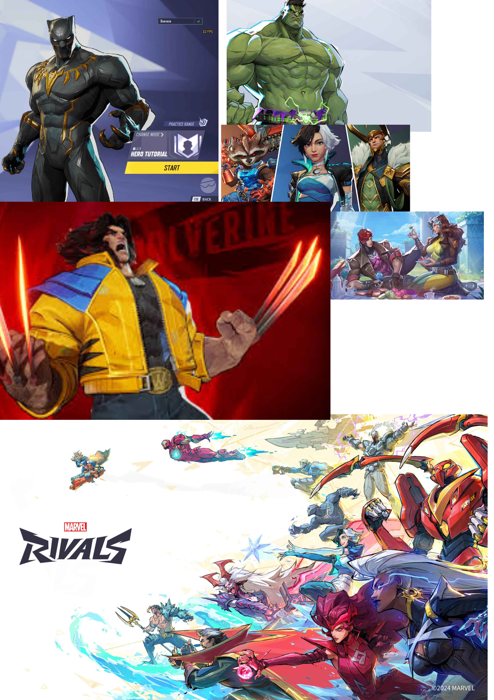
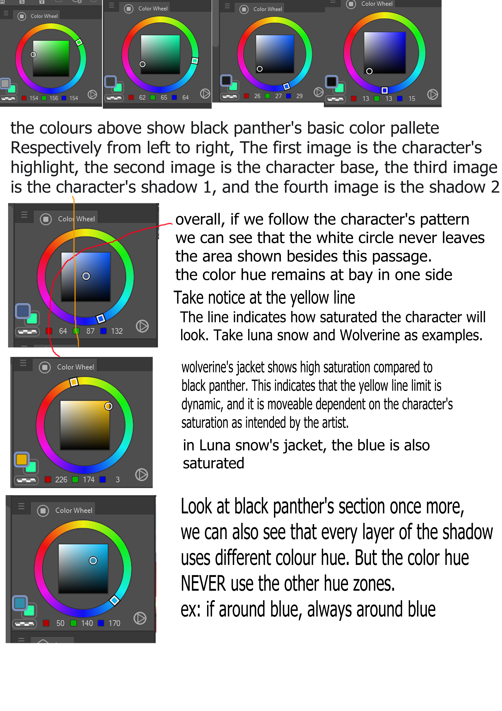

In FINDING #1, I found that marvel rivals uses a unique color architecture
There is a static limit, and a dynamic limit. Where static limit, defines
the character's color to never go to the area that it borders (with the exception
of white), and dynamic limit, defines the character's saturation depending on its
color scheme so that the colors don't brawl with one another.

